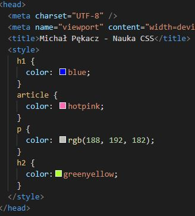
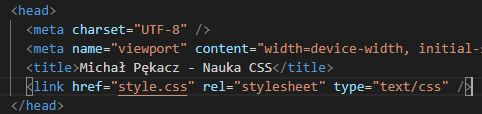
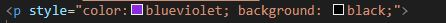
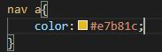
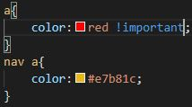
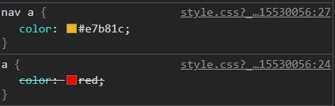

CSS=Cascading Style Sheets (kaskadowe arkusze stylów)
CSS odpowiada za prezentację/nadawanie wyglądu na ekranach, ale także
wydrukach, czytnikach ekranowych itp. Składnia CSS to reguły
(selektor,właściwość,wartość).
Stylowanie po nagłowkach
Na początek wpiszmy znacznik style w sekcji head (w sekcji body
widzimy treść, w sekcji head umieszczamy to co wpływa na wygląd,
działanie strony).

W związku z tym, że ostylowanych elementów może pojawić się więcej
najlepiej style wrzucić do oddzielnego pliku. Będzie to zewnętrzny
arkusz stylów.

* to selektor uniwersalny
Atrybut "style"
Style mozna również dołączyć za pomocą atrybutu style, który
przypinamy do danego znacznika, nazywa się to stylem inline
(liniowym). Style CSS wpisujemy wewnątrz atrybutu. Możemy wpisać
więcej niż jedną własność, np

Korzystając z tego atrybutu może nam się pojawić bałagan w kodzie,
zanim zobaczymy treść lista atrybutów może osiągnąc 20 i więcej
pozycji.
Selektory .class oraz #id
Powyższe sposoby nie sprawdzą się, gdy chcemy np tylko części z
tagów nadać osobny styl. Z pomocą przychodzi nam atrybut class
(stylowanie za pomocą selektora klasy). Dzięki niemu możemy
pogrupować elementy na klasy. Przypinając atrybut class do znacznika
nadajemy mu nazwę (nazwa klasy kebab-case), a następnie w arkuszu
stylów zamiast znacznika wpisujemy
.nazwa-klasy - kropka przed nazwą to selektor klasy.
Innym sposobem jest stylowanie za pomocą id. Tak samo jak w
poprzednim przykładzie, do znacznika dodajemy id o określonej
nazwie, a w arkuszu CSS zamiast znacznika wpisujemy
#nazwa-id - # to selektor id.
Selektory można łączyć, np chcąc wyróznić linki znajdujące się tylo
w nawigacji (bardziej ogólnie elmenty znajdujące się w elementach)
należy w arkuszu stylów wpisać

W tym przypadku jeden element nie musi byc bezpośrednio nad innym,
taki sam efekt otrzymalibyśmy zamiast nav wpisując header, wtedy
ostylowalibyśmy wszystkie linki znajdujące się w sekcji header.
!important - nadpisuje wszystkie rzeczy, które mogą być zdefiniowane
dla elementów. Jeśli zdefiniujemy kolor wszystkich linków dopisując
!important, zmieni się kolor linków także w elemencie nav,
nadpisując wczesniej zdefiniowany kolor:

Jeśli nie musimy, nie należy go stosować.
Kiedy pewien element jest ostylowany na kilka sposobów, obowiązuje
hierarchia sposobu, w jaki ostylowaliśmy dany element:
!important > style="" (inline) > #name > .name > element
Np wracając do przykładu z linkami w nawigacji, możemy podejrzeć w
devtoolsach która zasada obowiązuje, a która nie(jest ona
przekreślona).

Jeśli specyficzność jest równa, pierwszeństwo ma selektor "bliżej"
elementu. Tak samo, jeśli wpiszemy dwa style w jeden selektor wygrywa
ta własność, która jest niżej. Dobrą praktyką jest dodawać klasy do
wszystkich elementów i unikanie zagnieżdżań (nie pisać stylów np
header nav a), lepiej dodać klasę do elementu który nas interesuje (np
klasa header-link do linków w nav) i stylować po tych klasach.
używamy pojedynczych słów z j. angielskiego
nazywamy rzeczy zgodnie z ich funkcją na stronie
nazwa z małej litery
nie zaczynamy od cyfr
jeśli nazwa ma więcej niż 2 słowa, używamy kebab-case
staramy się, żeby element miał jedną klasę (nie zwiększamy
specyficzności bez potrzeby)
Poznałem takie własności i wartości jak:
-display: block; display: inline; display: inline-block
-width; height; max-width; amx-height; min-width; min-height;
overflow: visible(domyślna)/hidden/auto;
-viewport-width; viewport-height;
-padding; border: width/style/color; margin: auto; border-radius
-border-box
-position: static/relative/absolute; top/right/bottom/left
-z-index
-position: fixed/sticky/float
Poznałem takie własności i wartości jak:
display: flex
flex-direction: row/column/row-reverse/column-reverse
flex-wrap: wrap/nowrap/wrap-reverse
flex-flow: row nowrap - domyślne wartości
justify-content:
flex-start/flex-end/center/space-between/space-around/space-evenly.
align-content:
stretch/flex-start/flex-end/center/space-between/space-around.
align-items: stretch/flex-start/flex-end/center/baseline
align-self: stretch/flex-start/flex-end/center/baseline
Order - liczba całkowita (dodatnia bądź ujemna)
flex-grow - domyslna wartość 0. Inne wartości to liczby/proporcje.
flex-shrink - 1/ liczba/proporcja. Domyślnie 1
flex-basis - none/rozmiar bazowy.
flex: flex-grow/flex-shrink/flex-basis
Background-image: url('sciezka-do-pliku'); (body class="page").
Background-position - domyślna wartość 0 0 (lewy górny róg). Warto dać
min-height 100vgh dla body. Tło jest wyśrodkowane w rozmiarach
orginalnych obrazka.
background-repeat: repeat/repeat-x/repeat-y/no-repeat/round/space.
background-attachment: scroll(domyślna wartość)/fixed/local (
spróbować razem z overflow - scroll)
background-origin: padding-box/border-box/content-box. Definiuje nam
to, w którym miejscu tło powinno się zaczynać. Domyslne padding-box.
background-clip: border-box/padding-box/content-box. mówi nam w którym
miejscu tło powinno byc cięte. Domyślnie border-box.
background-color: tło może byc półprzezroczyste. background-color:
rgba.
background-size: auto (domyślne)/cover/contain/width height. Contain -
cały obrazek będzie się mieścił w oknie. Działa w zależności od
repeat, position i attachment. Cover- obrazek zawsze wypełnia stronę
niezależnie od contentu. Cover najczęściej wykorzystywany.
Gradienty. Na stronie
www.grabient.com możemy
skorzystać z gotowych lub stworzyć swój własny gradient.
Zadaniem będzie utworzenie projektu wizytówki w HTML-u na bazie
projektu graficznego.
Kroki i uwagi do tworzenia projektu:
-
Utworzenie szkieletu strony, podpięcie plików ze stylami,
wydzielenie elementów i stworzenie BEM.
-
Kolory tła i wizytówki
-
Ustawienie elementu na stronie za pomocą flexboxa.
-
Ustawienie paddingu, ustawienie lub usinięcie marginesów i
ostylowanie każdego z elementów po kolei.
Uwagi:
-
Jesli ustawimy we flexboxie align-content a element się nie
wyśrodkuje, należy sprawdzić czy element nie zajmuje całej wysokości
kontenera.
-
Możemy na body ustawić margin - lepiej to wygląda.
-
Domyślną czcionkę/rodzinę czcionek możemy wrzucić w stylach do
elementu body.
-
nowa własność - line-height
-
Chcąc wyróżnić część tekstu możemy opakować go w tagi (strong/b),
następnie nadać im klasę (niekoniecznie zgodną z BEM, mozna sobie
zrobić zestaw klas służących tylko do wyróżniania)
-
Program Figma ma zakładkę kod - możemy skopiować elementy takie jak
kolory, własności fontów.
Własności tekstu:
- font-family - odpowiada za czcionkę w elemencie
- font-size - wielkość czcionki
- font-weight: bold/normal grubość czcionki
- font-style; italic/normal - styl czcionki
-
text-decoration: none - likwiduje podkreślenie linków i zmianę
kolorów już odwiedzonych
Powstał z potrzeby stworzenia prostego systemu do budowania layoutów.
Cechuje go przyjazny zapis i możliwość łatwej edycji w kontekście
responsywności. Standard dopasowany do aktualnego stanu stron
internetowych.
Numeracja w gridzie zaczyna się od 1 a nie od 0.
Grid line - przebiega przez całość grida, rozdziela grid tracks
Grid track (column) - kolumna gridowa - obszar
Grid track (row) - wirsz gridowy - obszar
Grid cell - pojedyncza komórka
Grid Area - kilkakomórek - musi być prostokątem
grid-template-columns: 'wartosc po spacji' np 100px 300px; tworzy nam
kolumny o zadanych szerokościach. Jeśli dodamy kolejne elementy
stworzy nam kolejny wiersz. Własności grid działają na jego
bezpośrednie dzieci. Jeśli wrzucę więcej treści to wiersz mi się
automatycznie rozszerzy. Jako jednostek możemy użyć np vw, %.
grid-template-rows: definiuje nam liczbę wierszy i jak te wiersze mają
się zachowywać. W tym przypadku jeśli content jest dłuższy to wyjdzie
poza wiersz, a wiersz bedzie trzymał zadany wymiar. Jesli elementów
będzie więcej niż wierszy ktopre zdefiniowaliśmy to nastepne elementy
będą się zachowywać tak, jak dla nie zdefiniowanego wiersza
(automatycznie rozszerzane).
nowa jednostka: fr - ułamek szerokości strony. Skaluje się z
szerokością, jednostki możemy mixować np 200px 2fr 1fr;.
Jest też wartość repeat, gdzie można stworzyć kilka takich samych
kolumn np grid-template-columns: repeat(4, 200px) 1fr; podzieli nam na
4 kolumny po 200px i jedną o szerokości 1fr.
min-max - działa na zakresie np
grid-template-columns: 1fr minmax(200px, 1fr);
sprawi, że zakres drugiej kolumny to minimum 200px, maksymalnie 1fr(w
tym przypadku połowa okna).
column-gap - odstępy między kolumnami, przerwy tworzą się tylko między
kolumnami, nie na zewnątrz nich.
row-gap - odstępy między wierszami, przerwy tworzą się tylko między
wierszami, nie na zewnątrz nich.
Morzemy wrzucić grida np do .main. Skorzystajmy z grid-template areas.
Grid-item - odnosi się do elementu w gridzie. Grid-area - definiujemy
nasze obszary. Niezdefiniowany obszar możemy zrobić wstawiając
dodatkową kolumnę w grid-template areas wstawiając kropkę w
niezdefiniowany obszar. Musimy też podać szerokość tego obszaru.
Grid-column/row-start i grid-column/row-end - definiujemy obszar po
siatce gridowej. Możemy elementy na siebie nachodzące zasłaniać za
pomocą z-index.
Linie gridu możemy też nazwać np [pierwsza] [druga] itd. (przy
grid-template-columns) a potem przy definiowaniu zasięgu obszaru
odnieść się do tych nazw, np grid-column-start: pierwsza;
grid-column-end: trzecia; możemy też przy grid-column end użyć
wartości span 3/innynumer; wtedy przejdzie przez np 3 kolumny.
możemy też skorzystać z wartości grid-area: row start/ col start/ row
end/ col end, zastąpi on własności powyższe.
możemy też skorzystać z grid-column wartość / wartość i grid-row:
wartość/wartość. Wszystkie zapisy są równoważne.
Grid nie zastępuje flexboxa. Grid jest stosowany do budowania całych
layoutów a flexboxa możemy użyć do pozycjonowania/centrowania już
wewnątrz tego elementu. Nie używajmy flexa do budowania layoutów.
Media queries - zapytania o media. jedna strona html może wyświetlać
się na smartfonie/tablecie/laptopie i nie trzeba nic zmieniać po
stronie kodu HTML, ale zmieniane są style. RWD - responsive web
design.
@media wpisujemy w CSS. możemy podać media-type
(screen/print/all/...), media-feature
(min-width/max-width/color/aspect-ratio/orientation/...), możemy to
łączyć za pomocą and / not / , (przecinek działa jak or w js).
Media queries nie mają wpływu na specyficzność, dlatego dobrze je
tworzyć po zdefiniowaniu elementu.
Mobie-first. Najpierw stylujemy stronę pod urządzenia mobilne a
później np na desktop.
Możemy ustalić kilka @media dla kolejnych wyższych rozdzielczości.dla
każdego @media musimy wpisać odpowiednie selektory, dla których
okreslone warunki będą spełnione.
możemy chować elementy - display: none; i odpowiednia klasa np w tagu
span.
jeżeli chcemy żeby dane style były stosowane w danym zakresie możemy
dodać np
@media screen and (min-width: 600px) and (max-width: 1023px) {
Tutaj podajemy graniczną wartość o 1 mniejszą od następnego zakresu.
Break-pointy to zdefiniowane szerokości, na których następuje zmiana
stylu.